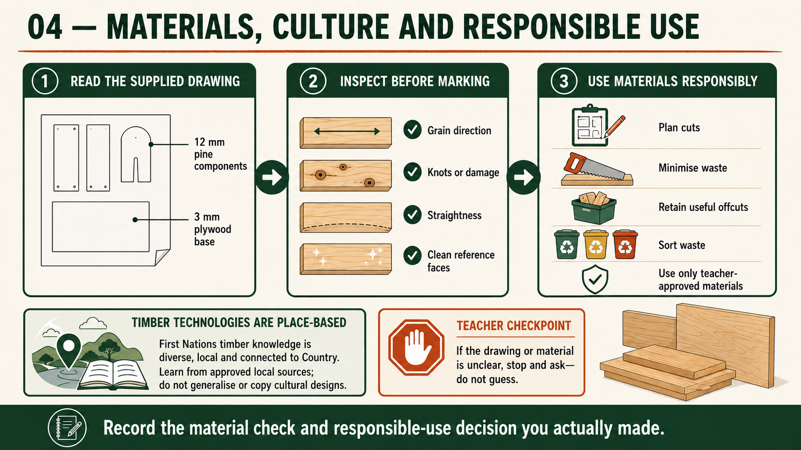

Module presentation
Learn with the slides
Use the presentation to preview Selecting pine and plywood for the Carry-All, Learning respectfully from Aboriginal and Torres Strait Islander timber technologies, Using timber responsibly and reducing project waste before working through the theory, videos, checks and written evidence.
Weeks 3-4
This module
Select project materials thoughtfully, learn respectfully from place-based timber knowledge and plan to reduce waste.
Your work
Student details
Your entries save automatically in this browser. Use Print / Save PDF before leaving the page.
Theory 1
Selecting pine and plywood for the Carry-All

The working drawing specifies 12 mm pine for the Carry-All’s timber components and a 3 mm plywood base. These materials have different properties and purposes, so they must be selected carefully rather than treated as interchangeable. Pine provides the solid timber needed for the sides, central handle or handle panel, dividers and other components shown on the drawing. The plywood base is a thin sheet material designed to fit where specified and help form the bottom of the Carry-All.
Pine has visible grain running mainly along the length of the board. Grain direction affects appearance, strength, marking, shaping and surface preparation. When selecting stock, look for a grain pattern that suits the component and allows the part to be arranged efficiently. The direction and condition of the grain should also be considered where joints, rebates or housings are shown. Do not decide orientation from appearance alone; check the working drawing and confirm the layout with your teacher before marking or cutting.
Timber defects can reduce accuracy, strength and finish quality. Inspect pine for bow, cup, twist, splits, loose knots, damaged edges, dents, resin pockets or other faults that may interfere with manufacture. A small defect may be acceptable if it can be placed outside the required component, but that decision must be approved by the teacher. Stock that is badly distorted or damaged should not be forced into use simply to avoid selecting another piece.
- Confirm that the pine and plywood are teacher-approved stock.
- Check pine for straightness, flatness, sound edges and usable grain.
- Inspect both faces and edges of the plywood for damage or separation.
- Plan component placement to avoid defects and reduce unnecessary waste.
- Keep the selected material clearly identified before practical work begins.
Plywood is made from thin layers bonded together, which generally gives it useful stability across the sheet. This makes it suitable for the specified 3 mm base, but thin plywood can still be damaged by rough handling, moisture, poor storage or unsupported pressure. Inspect it for warping, cracked surfaces, chipped edges, dents and separation between layers. The face quality also matters because damage may remain visible or affect how the base fits into the completed Carry-All.
Good material selection supports every later stage. Straight, sound stock is easier to mark accurately, assemble, clamp, prepare and finish. Poor stock can create gaps, misalignment or extra correction work even when the construction process is careful. Record why the selected material was suitable and note any defect that was avoided. This connects your practical choices with the final quality and evaluation of the Carry-All.
Theory 2
Learning respectfully from Aboriginal and Torres Strait Islander timber technologies
Aboriginal and Torres Strait Islander timber technologies are not one single tradition. They include many distinct knowledge systems developed by different Nations, language groups, families and communities over long periods of time. This knowledge is connected to Country, local plants, seasons, material properties, purpose and cultural responsibility. Learning respectfully means recognising this diversity and avoiding broad statements that treat all First Nations peoples, places or practices as the same.
Timber technologies can involve detailed knowledge of how particular materials behave, where they may be responsibly obtained, how much should be taken and how resources should be cared for into the future. This knowledge is not simply a collection of making techniques. It can include relationships, responsibilities and rules about who may use, teach or share particular knowledge. Some information may be public, while other knowledge may be culturally restricted or belong to particular communities. Students should not copy cultural objects, designs, symbols or processes without appropriate authority and context.
Credible learning should come from sources that identify the relevant Nation or community and have been created, endorsed or guided by Aboriginal and Torres Strait Islander people. Local Aboriginal organisations, Elders, community educators, cultural centres and recognised First Nations authors are stronger sources than anonymous websites or simplified summaries. Your teacher should guide source selection and confirm what is appropriate to include in school work.
- Identify the specific community, Country or knowledge source where this is publicly provided.
- Use the community’s preferred names and language accurately.
- Explain the knowledge without claiming ownership or speaking for First Nations people.
- Avoid reproducing cultural objects, motifs or restricted practices.
- Reference the source clearly and distinguish evidence from your own interpretation.
This learning can inform your approach to the Carry-All without turning the project into an imitation of a cultural object. One respectful connection is careful material use. Inspecting teacher-approved pine and plywood, planning around defects, orienting usable stock thoughtfully and reducing unnecessary waste all show that materials should not be treated as disposable. These actions do not reproduce First Nations knowledge, but they can help you reflect on responsibility, purpose and the consequences of material choices.
Your folio should explain this connection carefully. State what a credible source taught you about place-based knowledge, material understanding or custodianship, then describe one relevant decision in your Carry-All process. Avoid vague claims such as “Aboriginal people used wood sustainably”. Stronger work identifies the source, acknowledges diversity and explains a specific lesson without pretending that one example represents every community.
Theory 3
Using timber responsibly and reducing project waste
Responsible material use begins before any component is marked or cut. The Carry-All working drawing and teacher directions identify what must be made from the approved 12 mm pine and 3 mm plywood. Cutting-list thinking means identifying every required component, checking its material and planning how the parts can be arranged on the available stock. This reduces mistakes, avoids unnecessary cutting and helps ensure that enough suitable material remains for the complete project.
An efficient layout is not simply placing parts as close together as possible. You must consider grain direction, component orientation, defects, required joints and the areas needed for rebates or housings where shown. Inspect the pine for knots, splits, distortion, damaged edges or other faults, then plan components around unsuitable areas where possible. Plywood should also be checked for warping, chipped edges or separation between layers. Any decision to use material near a defect must be confirmed by your teacher.
- Check the cutting list against the working drawing before marking stock.
- Arrange larger or less flexible components before smaller pieces.
- Place components to avoid defects without creating excessive waste.
- Clearly mark usable off-cuts and return them to the approved storage area.
- Separate reusable material from waste according to workshop procedures.
Off-cuts should not automatically be thrown away. A piece that is too small for one component may still be suitable for another approved purpose. Preserve useful off-cuts by keeping them clean, clearly identified and free from unnecessary damage. At the same time, not every scrap is worth storing. Very small, damaged or unsafe pieces should be placed in the correct waste stream as directed by your teacher. Responsible use involves making sensible decisions rather than keeping everything or discarding everything.
Material responsibility also includes asking where timber and sheet products come from and how they have been sourced. Students may not control school purchasing, but they can consider whether suppliers provide credible information about legal harvesting, responsible forest management, recycled content or product certification. These questions connect workshop decisions with broader environmental impacts. Claims about sustainability should be supported by reliable information rather than assumptions based only on the appearance or type of material.
Your folio evidence should show the decisions that reduced waste. A labelled layout photograph, cutting-list annotation or short explanation can identify how components were positioned, which defect was avoided and which off-cut was preserved. This is stronger than simply stating that you “used materials sustainably” because it demonstrates a specific action and its result. Material use should also be reviewed during the final evaluation by considering avoidable waste, mistakes and improvements for future projects.
Guided practice
Weeks 3-4 knowledge checks
Choose an answer, check it and use the progressive hints and feedback to improve.
Apply your learning
Scaffolded written responses
Write first, use the feedback prompts, then compare your reasoning with the appropriate response example.
Finish the two-week block
Save your evidence
Your work saves in this browser, but browser storage is not the official submission. Save the completed page as a PDF before changing devices or clearing browser data.
No marks, answers or personal information are sent from this webpage.